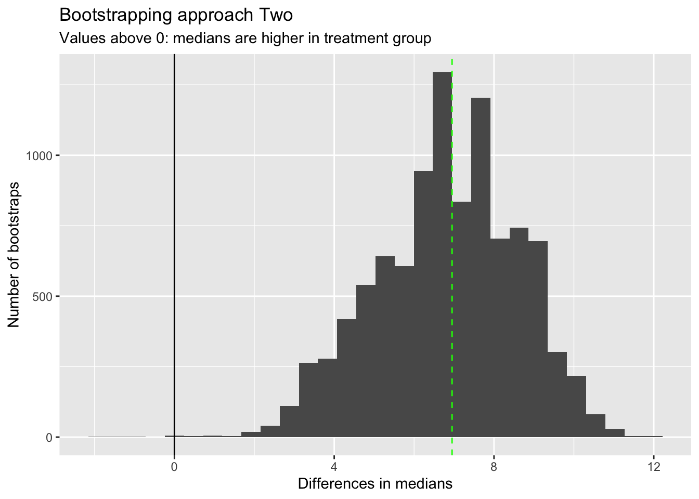

(It’s only literally like pulling teeth, and only in this specific example!)
bootstrapping
statistics
non-parametric
Author
Jon Minton
Published
June 28, 2024
I met with Neil Pettinger earlier today. He traded eggs benedict for some statistical advice, mainly on what bootstrapping is, and whether it could be helpful for analysing hospital length of stay data.
Here’s a brief post on bootstrapping with some example code:
Bootstrapping is any test or metric that uses random sampling with replacement (e.g. mimicking the sampling process), and falls under the broader class of resampling methods. Bootstrapping assigns measures of accuracy (bias, variance, confidence intervals, prediction error, etc.) to sample estimates.[1][2] This technique allows estimation of the sampling distribution of almost any statistic using random sampling methods.[3][4]
Bootstrapping estimates the properties of an estimand (such as its variance) by measuring those properties when sampling from an approximating distribution. One standard choice for an approximating distribution is the empirical distribution function of the observed data. In the case where a set of observations can be assumed to be from an independent and identically distributed population, this can be implemented by constructing a number of resamples with replacement, of the observed data set (and of equal size to the observed data set).
It may also be used for constructing hypothesis tests.[5] It is often used as an alternative to statistical inference based on the assumption of a parametric model when that assumption is in doubt, or where parametric inference is impossible or requires complicated formulas for the calculation of standard errors.
n.b. The same page (In History) also states: “Other names … suggested for the ‘bootstrap’ method were: Swiss Army Knife, Meat Axe, Swan-Dive, Jack-Rabbit, and Shotgun.” So, there might not be good reasons to fear statistics, but given this list of suggestions there might be good reasons to fear some statisticians! Of these alternative names, perhaps Swiss Army Knife is the most appropriate, as it’s a very widely applicable approach!
A brief example
I’m not going to look for length-of-stay data; instead I’m going to look at length-of-teeth, and the hamster experiment dataset I used in a few previous posts.
library(tidyverse)
── Attaching core tidyverse packages ──────────────────────── tidyverse 2.0.0 ──
✔ dplyr 1.1.4 ✔ readr 2.1.6
✔ forcats 1.0.1 ✔ stringr 1.6.0
✔ ggplot2 4.0.0 ✔ tibble 3.3.0
✔ lubridate 1.9.4 ✔ tidyr 1.3.1
✔ purrr 1.2.0
── Conflicts ────────────────────────────────────────── tidyverse_conflicts() ──
✖ dplyr::filter() masks stats::filter()
✖ dplyr::lag() masks stats::lag()
ℹ Use the conflicted package (<http://conflicted.r-lib.org/>) to force all conflicts to become errors
Let’s say, instead of building a statistical model, I’m just interested in the following question:
Where the dose is 1mg, is using the OJ supplement instead of the VC supplement associated with a significant and detectable difference in the median tooth length?
We can do this in at least a couple of ways:
Calculate the median of OJ at 1mg tooth lengths, and compare it to a bootstrapped distribution of medians from VC at 1mg.
Bootstrap both the OJ and VC (both at 1mg) populations, get the medians for each bootstrapped population, and record the difference in the medians.
These are asking slightly different questions, but both ways of using bootstrapping to address the general type of question framed above.
Approach One
Nreps <-10000# Number of bootstrap replicatesbs_med_vc <-vector(mode ='numeric', length = Nreps) #Vector for holding bootstrapped mediansdta_vc <- df |>filter(supp =="VC", dose ==1.0) # The equivalent of our 'control' populationcontrol_toothlengths <- dta_vc |>pull(len) # Literally pulling teeth!Ncontrol <-length(control_toothlengths) #Length of 'control' population samplefor (i in1:Nreps){ bs_c_length <-sample( control_toothlengths, size = Ncontrol,replace =TRUE ) # resampling to the same length as the 'control' population this_bs_control_median <-median(bs_c_length) bs_med_vc[i] <- this_bs_control_median}
We’ve now done the bootstrapping on the ‘control’ population. Let’s look at this bootstrapped distribution of medians in comparison with the observed median from the ‘treatment’ group.
treatment_toothlengths <- df |>filter(supp =="OJ", dose ==1.0) |>pull(len) # pulling teeth for the 'treatment' populationobs_med_oj <-median(treatment_toothlengths)tibble(bs_control_median = bs_med_vc) |>ggplot(aes(x=bs_control_median)) +geom_histogram() +geom_vline(xintercept = obs_med_oj, colour ="red", linetype ="dashed") +geom_vline(xintercept =median(control_toothlengths), colour ="blue", linetype ="dashed") +labs(x ="Median toothlength",y ="Number of bootstraps",title ="Bootstrapping approach One",subtitle ="Red line: Observed median toothlength in 'treatment' arm. Blue line: Observed median in 'control' arm" )
`stat_bin()` using `bins = 30`. Pick better value `binwidth`.
We can see here that the red line, which is the observed median in the ‘treatment’ arm, is higher than all of the bootstrapped medians from the ‘control’ arm. The blue line shows the equivalent in the observed median in the ‘control’ arm.
So, without even performing a calculation, we can feel more confident that the OJ supplement is associated with larger tooth length, even though both arms comprise just ten observations.
Approach Two
Let’s now use bootstrapping to produce a distributions of differences in medians between the two arms. So, this time we repeatedly resample from both the control and the treatment arm.
Nreps <-10000# Number of bootstrap replicatesbs_diff_meds <-vector(mode ='numeric', length = Nreps) #Vector for holding differences in bootstrapped mediansdta_vc <- df |>filter(supp =="VC", dose ==1.0) # The equivalent of our 'control' populationcontrol_toothlengths <- dta_vc |>pull(len) # Literally pulling teeth!Ncontrol <-length(control_toothlengths) #Length of 'control' population sampledta_oj <- df |>filter(supp =="OJ", dose ==1.0) # The equivalent of our 'treatment' populationtreatment_toothlengths <- dta_oj |>pull(len) # Literally pulling teeth!Ntreatment <-length(treatment_toothlengths) #Length of 'treatment' population samplefor (i in1:Nreps){ bs_c_length <-sample( control_toothlengths, size = Ncontrol,replace =TRUE ) # resampling to the same length as the 'control' population this_bs_control_median <-median(bs_c_length) bs_t_length <-sample( treatment_toothlengths, size = Ntreatment,replace =TRUE ) # resampling to the same length as the 'control' population this_bs_treat_median <-median(bs_t_length) bs_diff_meds[i] <- this_bs_treat_median - this_bs_control_median}
We now have a bootstrapped distribution of differences, each time subtracting the bootstrapped control median from the bootstrapped treat median. So, values above 0 indicate the treatment is more effective (at lengthening teeth) than the control.
Let’s look at this distribution
tibble(bs_diffs_median = bs_diff_meds) |>ggplot(aes(x=bs_diffs_median)) +geom_histogram() +geom_vline(xintercept =0) +geom_vline(xintercept =median(treatment_toothlengths) -median(control_toothlengths), linetype ="dashed", colour ="green" ) +labs(x ="Differences in medians",y ="Number of bootstraps",title ="Bootstrapping approach Two",subtitle ="Values above 0: medians are higher in treatment group" )
`stat_bin()` using `bins = 30`. Pick better value `binwidth`.

I’ve added the observed difference in medians as a vertical green line. This corresponds with the highest peak in bootstrapped differences in medians, as we might expect.
Almost all bootstrapped differences in medians are above 0, which again suggests we don’t even need to calculate the proportion above 0 to work out if there is likely to be a difference in medians between the two groups.
However if we wanted to get this empirical p-value, we could do it as follows:
sum(bs_diff_meds <0) / Nreps
[1] 2e-04
Tiny!
Going further
I suggested to Neil that writing some R code to do the bootstrapping can be a ‘good’ learning experience. This is what I’ve done in the above, using for loops as they’re easiest to reason through, even though not the most computationally efficient. Once the intuition of what bootstrapping is, how it works, and what it can do is embedded through writing out a few examples like this, there are plenty of packages that make bootstrapping even easier to do (and likely faster to run too).
I also mentioned and can (for pedagogic purposes) recommend the infer package, which uses bootstrapping to produce estimates of distributions under the Null hypothesis, alongside parametric approaches, and produces pretty visualisations to boot!